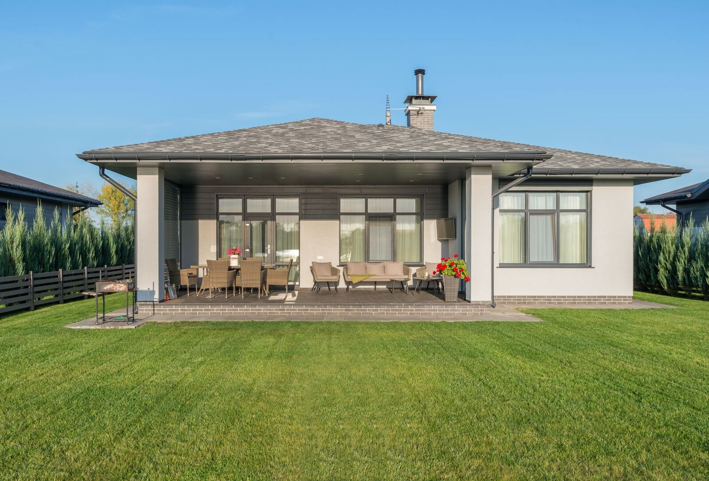
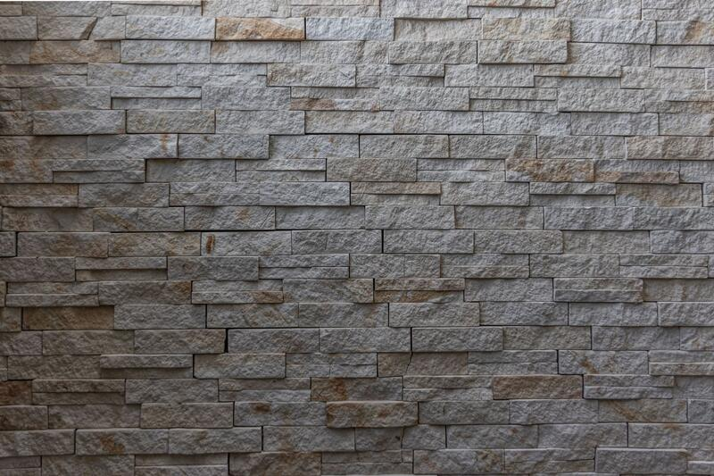

Trädgårdsanläggning
Gång och plantering
Stenlagd gång, nya rabatter och gräsytor runt huset.

Titta gärna på referensbilderna för att se vad vi arbetar med – i Varberg, Kungsbacka och Göteborg med omnejd.
Uppfarter, uteplatser, murar, altaner, dräneringar och trädgårdar. Filtrera efter typ av arbete:
Trädgårdsanläggning
Stenlagd gång, nya rabatter och gräsytor runt huset.

Stensättning
Schakt, bärlager och sättsand under marksten som tål tung trafik.

Murar
Mur som tar upp nivåskillnaden på en sluttande tomt.

Altan & bygg
Trädäck med pergola och plattlagd kant mot gräsmattan.

Markarbeten
Schaktning inför grund samt leverans av grus och makadam.

Tomtplanering
Finplanering, ny gräsmatta och uteplats i anslutning till huset.

Stensättning
Plattlagd gång med dränerande stenkant längs staketet.

Murar
Klädsel i naturstensskiffer.

Trädgårdsanläggning
Avjämning och utläggning av färdigrullad gräsmatta.

Markarbeten
Schaktning och packning av grusbädd inför bygge.

Tomtplanering
Finplanering av stora gräsytor runt en villa.

Trädgårdstjänster
Löpande skötsel av häckar och planteringar.
Från första spadtag till färdig tomt.En kontakt – hela vägen.
Hur kan vi hjälpa dig med ditt projekt?
Kontakta osseller ring direkt: 0735-23 53 16